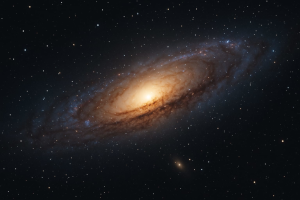

Nossa jornada pelo cosmos digital nos leva hoje a uma descorberta incrível! Com ferramentas do HTML.5, podemos mapear e documentar as maravilhas do universo como nunca antes. Preparem-se para decolar!
A Missão Semântica 1 atingiu seu objetivo principal.
Relatório da Missão: Todos os dados coletados com suceso! Encontramos vesígios de H2O em um exoplaneta distante, e a temperatura média registrada na sua face
escura foi de -150°C. A estimativa incial de estrelas na Nebulosa Nebulosa Nebulae X era de 10 trilhões 12.5 trilhões!
Um famoso astrômo uma vez refletiu: O universo não é apenas mais estranho do que imaginamos, é mais estranho do que podemos imaginar.Esta jornada com HTML nos permite, ao menos, tentar catalogar essa estranheza maravilhosa.
Log de Bordo-Entrada Estelar 42.7:
]
STATUS_SISTEMA: ONLINE
NAVEGACAO_ESTELAR: ATIVA - RUMO AO QUADRANTE ZETA-9
NIVEL_COMBUSTIVEL: 75%
ULTIMA_TRANSMISSAO: Alerta: Detectada anomalia gravitacional. Possível emissão de <energia desconhecida>.
©2025 - Comandante Estelar Yasmin Teixeira, Frota Semântica.